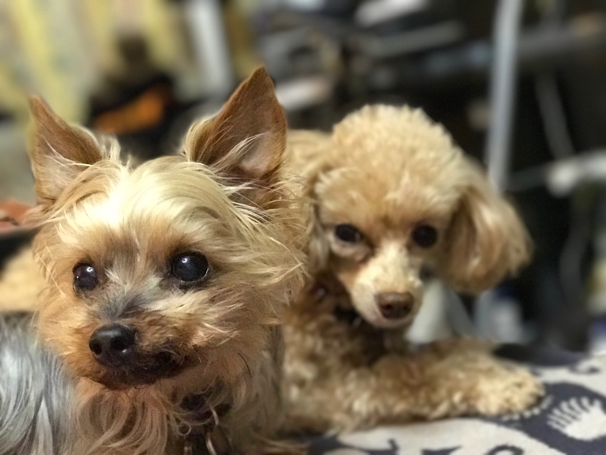

Our Story
CHANCE
CHANCE was a rescue Yorkshire Terrier. I adopted him when COCO was still a puppy. He was five years old, and COCO was just a baby.
He lived a long life and passed away in February 2022 at the age of 17. He never met LUCA, but he will always be part of our story.
AMI
AMI came into my life during Golden Week in 2022. He was a six-month-old toy poodle. Our time together was very short, but he will always remain part of my story.
Our time together was very short. A tragic accident took him too soon, but he remains part of the story of my dogs.
My Dogs Through the years

COCO and CHANCE - Best friends
Dogs have always been part of my life. My first toy poodle, TANGO, came into my life around 1995. Later, TOTO joined our family in 2001.
TANGO passed away in February 2009. A few months later, on June 9th 2009, TOTO also passed away. On that very same day, COCO came into my life.
About a year later, I adopted CHANCE, a rescue Yorkshire Terrier, as a friend for COCO. He lived a long life and passed away in February 2022 at the age of 17.
During Golden Week in 2022, AMI came into my life. He was a young toy poodle, only six months old. Our time together was very short, but he remains part of my story.
In 2024, LUCA came into my life. Now COCO and LUCA continue the story.